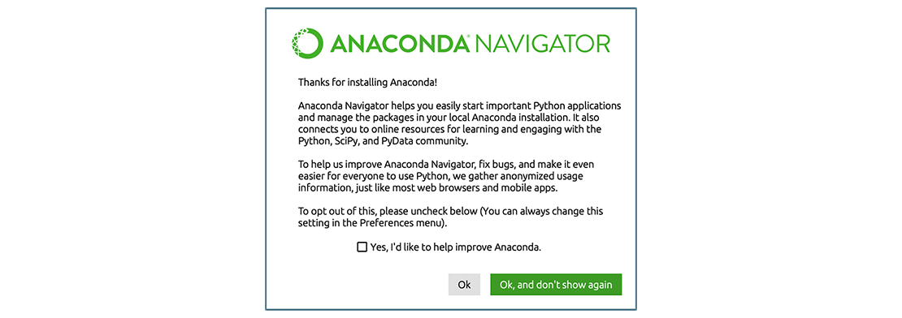
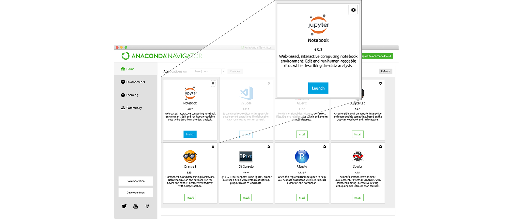
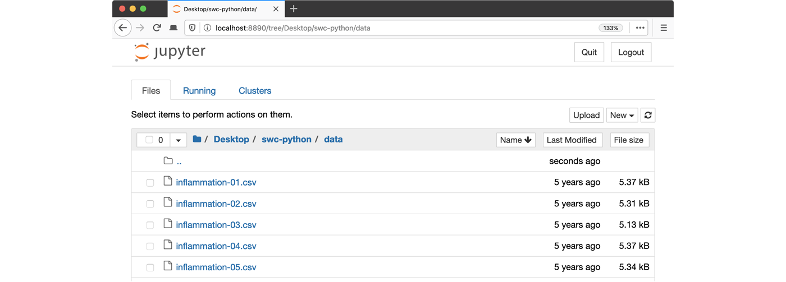
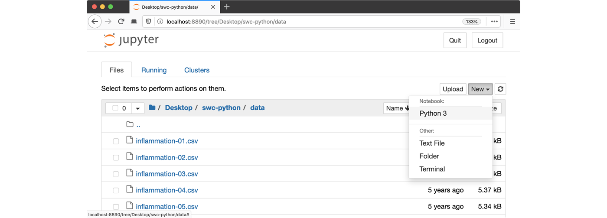
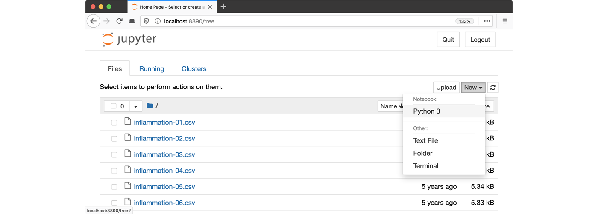

Summary and Setup
The best way to learn how to program is to do something useful, so this introduction to Python is built around a common scientific task: data analysis.
Scenario: A Miracle Arthritis Inflammation Cure
Our imaginary colleague “Dr. Maverick” has invented a new miracle drug that promises to cure arthritis inflammation flare-ups after only 3 weeks since initially taking the medication! Naturally, we wish to see the clinical trial data, and after months of asking for the data they have finally provided us with a CSV spreadsheet containing the clinical trial data.
The CSV file contains the number of inflammation flare-ups per day for the 60 patients in the initial clinical trial, with the trial lasting 40 days. Each row corresponds to a patient, and each column corresponds to a day in the trial. Once a patient has their first inflammation flare-up they take the medication and wait a few weeks for it to take effect and reduce flare-ups.
To see how effective the treatment is we would like to:
- Calculate the average inflammation per day across all patients.
- Plot the result to discuss and share with colleagues.
Data Format
The data sets are stored in comma-separated values (CSV) format:
- each row holds information for a single patient,
- columns represent successive days.
The first three rows of our first file look like this:
0,0,1,3,1,2,4,7,8,3,3,3,10,5,7,4,7,7,12,18,6,13,11,11,7,7,4,6,8,8,4,4,5,7,3,4,2,3,0,0
0,1,2,1,2,1,3,2,2,6,10,11,5,9,4,4,7,16,8,6,18,4,12,5,12,7,11,5,11,3,3,5,4,4,5,5,1,1,0,1
0,1,1,3,3,2,6,2,5,9,5,7,4,5,4,15,5,11,9,10,19,14,12,17,7,12,11,7,4,2,10,5,4,2,2,3,2,2,1,1Each number represents the number of inflammation bouts that a particular patient experienced on a given day.
For example, value “6” at row 3 column 7 of the data set above means that the third patient was experiencing inflammation six times on the seventh day of the clinical study.
In order to analyze this data and report to our colleagues, we’ll have to learn a little bit about programming.
Prerequisites
You need to understand the concepts of files and directories and how to start a Python interpreter before tackling this lesson. This lesson sometimes references Jupyter Notebook although you can use any Python interpreter mentioned in the Setup.
The commands in this lesson pertain to any officially supported Python version, currently Python 3.7+. Newer versions usually have better error printouts, so using newer Python versions is recommend if possible.
Getting Started
To get started, follow the directions on the Setup page to download data and install a Python interpreter.
Overview
This lesson is designed to be run on a personal computer. All of the software and data used in this lesson are freely available online, and instructions on how to obtain them are provided below.
Install Python
In this lesson, we will be using Python 3 with some of its most popular scientific libraries. Although one can install a plain-vanilla Python and all required libraries by hand, we recommend installing Anaconda, a Python distribution that comes with everything we need for the lesson. Detailed installation instructions for various operating systems can be found on The Carpentries template website for workshops and in Anaconda documentation.
Obtain lesson materials
- Download python-novice-inflammation-data.zip and python-novice-inflammation-code.zip.
- Create a folder called
swc-pythonon your Desktop. - Move downloaded files to
swc-python. - Unzip the files.
You should see two folders called data and
code in the swc-python directory on your
Desktop.
Launch Python interface
To start working with Python, we need to launch a program that will interpret and execute our Python commands. Below we list several options. If you don’t have a preference, proceed with the top option in the list that is available on your machine. Otherwise, you may use any interface you like.
Option A: Jupyter Notebook
A Jupyter Notebook provides a browser-based interface for working with Python. If you installed Anaconda, you can launch a notebook in two ways:
- Launch Anaconda Navigator. It might ask you if you’d like to send anonymized usage information to Anaconda developers:  Make your choice and click “Ok, and don’t show again” button.
- Find the “Notebook” tab and click on the “Launch” button:  Anaconda will open a new browser window or tab with a Notebook Dashboard showing you the contents of your Home (or User) folder.
- Navigate to the
datadirectory by clicking on the directory names leading to it:Desktop,swc-python, thendata:  - Launch the notebook by clicking on the “New” button and then selecting “Python 3”: 
1. Navigate to the data directory:
If you’re using a Unix shell application, such as Terminal app in macOS, Console or Terminal in Linux, or Git Bash on Windows, execute the following command:
BASH
cd ~/Desktop/swc-python/dataOn Windows, you can use its native Command Prompt program. The
easiest way to start it up is pressing Windows Logo
Key+R, entering cmd, and hitting
Return. In the Command Prompt, use the following command to
navigate to the data folder:
cd /D %userprofile%\Desktop\swc-python\data2. Start Jupyter server
BASH
jupyter notebookpython -m notebook3. Launch the notebook by clicking on the “New” button on the right and selecting “Python 3” from the drop-down menu: 
Option B: IPython interpreter
IPython is an alternative solution situated somewhere in between the plain-vanilla Python interpreter and Jupyter Notebook. It provides an interactive command-line based interpreter with various convenience features and commands. You should have IPython on your system if you installed Anaconda.
To start using IPython, execute:
ipython
Option C: plain-vanilla Python interpreter
To launch a plain-vanilla Python interpreter, execute:
pythonIf you are using Git Bash on
Windows, you have to call Python via
winpty:
winpty python